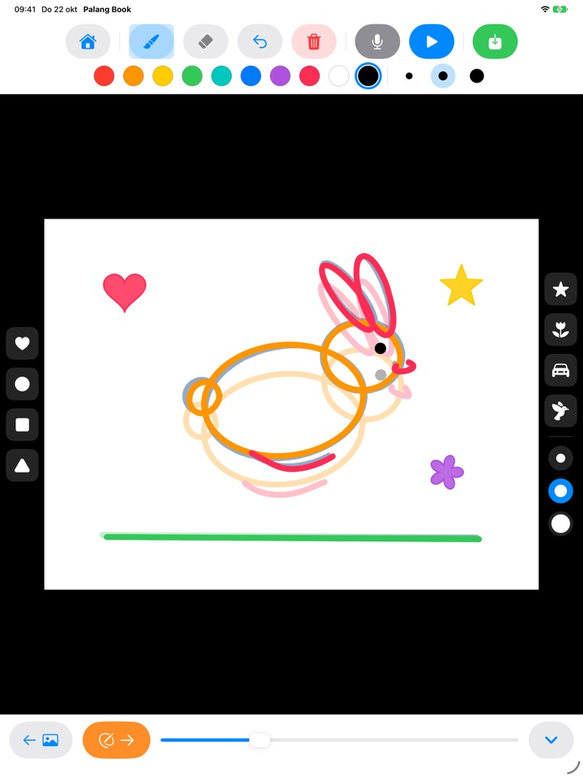
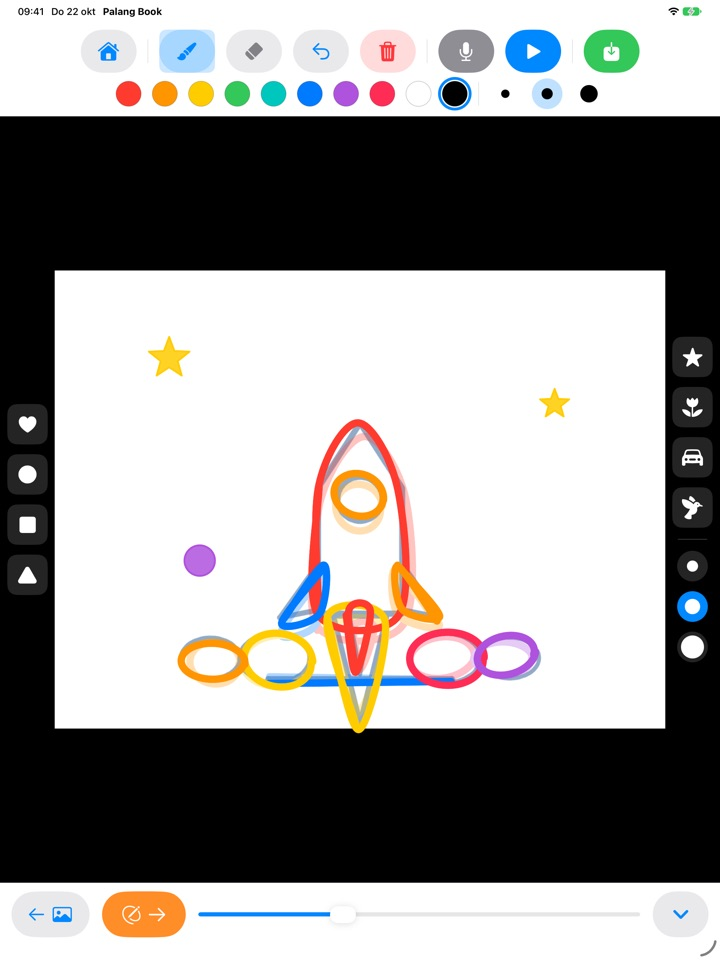
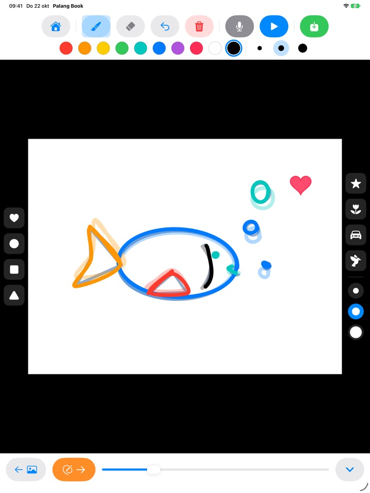
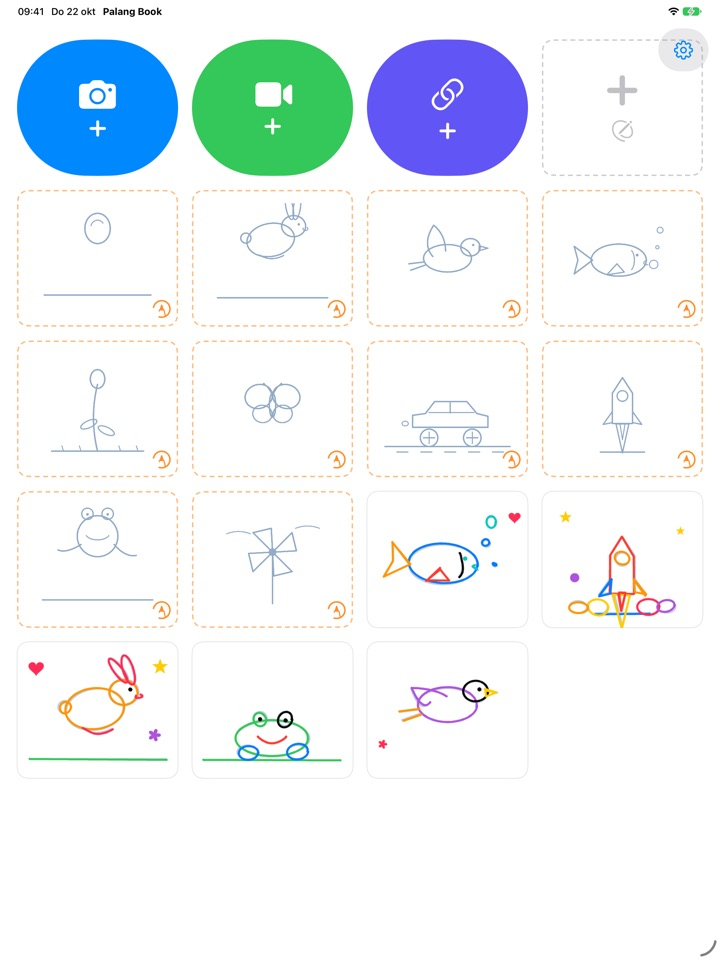

Trek de lijnen over.
Zie ze bewegen.
Je kind trekt een lichte voorbeeldtekening over, pagina voor pagina. Druk op afspelen en het voorbeeld verdwijnt: alleen de eigen lijnen bewegen. Elke knop is een plaatje, dus ook wie nog niet kan lezen, gaat zelf aan de slag.
Voor iPad. Drie overtreksets zijn gratis.

Teken een paar pagina’s
Teken iets en tik op de oranje pijl voor de volgende pagina. De vorige pagina schemert zwak door. Tik na twee of drie pagina’s op de blauwe afspeelknop.
Zonde als zo’n mooie tekening stil blijft staan, toch?
Animeren betekent bijna dezelfde tekening steeds opnieuw maken met kleine verschillen, en in hun eentje weten kinderen niet waar ze moeten beginnen. Palang Book legt een lichte voorbeeldtekening klaar waar de beweging al in zit, zodat je kind alleen de lijn hoeft te volgen. Zodra het op afspelen drukt, beweegt de tekening.
Volg de lijn en je hebt een animatie
Een stuiterende bal, een huppelend konijn, een vliegende vogel, een zwemmende vis, een bloeiende bloem, een vlinder, een racewagen, een raket, een kikker en een windmolen. Elke set heeft zo’n 20 voorbeeldpagina’s.
De vorige pagina schemert zwak door, zodat de volgende makkelijk aansluit, en bij het afspelen verdwijnt het voorbeeld: alleen de tekening van je kind beweegt.

Stempels en tien kleuren
Stempel hartjes, cirkels, vierkanten, driehoeken, sterren, bloemen, auto’s en vogels. Stempels en kwasten zijn er in drie formaten, en er zijn tien kleuren om uit te kiezen.
Met de gum en ongedaan maken is een foutje zo hersteld. Teken met je vinger of Apple Pencil.

Over je eigen video’s, of op wit papier
Voeg een zelf gefilmde video toe of een uit Foto’s en trek eroverheen. Verberg de achtergrond en alleen de getekende scènes spelen na elkaar af op wit papier. Er is ook een leeg flipboek helemaal zonder voorbeeld.
Tik op de microfoon om de stem van je kind erbij op te nemen en bewaar het resultaat als video in Foto’s, om met de familie te delen.

In drie stappen aan de slag
- 1
Tik op een voorbeeldkaart
De kaarten met een oranje stippellijn op het beginscherm zijn overtreksets.
- 2
Teken en blader verder
De oranje pijl brengt je naar de volgende pagina.
- 3
Tik op afspelen
Tik op de blauwe afspeelknop en de tekening beweegt.
Wat de knoppen doen
- Kaart met oranje stippellijn
- Begin met overtrekken
- Kaart met grijze stippellijn
- Leeg flipboek
- Blauwe camera
- Teken over een video die je opneemt
- Groene video
- Voeg een video uit Foto’s toe
- Indigo link
- Plak een link naar een videobestand
- Oranje pijl
- Volgende pagina
- Blauwe afspeelknop
- Speel de animatie af, tik nog eens om te stoppen
- Gebogen pijl
- Laatste lijn ongedaan maken
- Rode prullenbak
- Hele pagina wissen (ongedaan maken haalt hem terug)
- Microfoon
- Stem opnemen terwijl de animatie herhaalt
- Video-icoon
- Videoachtergrond verbergen (roze met streep: alleen tekeningen)
- Groene bewaarknop
- Als video bewaren in Foto’s
Wil je een kunstwerk verwijderen, houd dan de kaart op het beginscherm ingedrukt. De tekeningen, de opname en de toegevoegde video verdwijnen dan ook.
Volop gratis uit te proberen. Levenslange toegang als je er verliefd op wordt.
Gratis
- 3 overtreksets (bal, konijn, bloem)
- 3 kunstwerken bewaren
- 1 video toevoegen
- Lege flipboeken tot 10 pagina’s
- Stem opnemen tot 15 seconden
- Stempels, kleuren, kwasten en bewaren in Foto’s
Levenslange toegang
- Alle overtreksets, ook toekomstige
- Geen limiet op kunstwerken, pagina’s, video’s of opnametijd
- Geen Palang Book-kaart aan het eind van bewaarde video’s
Eenmalige aankoop, geen abonnement. Werkt met Delen met gezin op elke iPad in het gezin.
Gratis bewaarde video’s eindigen met een korte Palang Book-kaart. Gebruikte je Palang Book al voordat Levenslange toegang bestond, dan is alles voor jou al ontgrendeld.
Vragen
Hoe werken de voorbeelden?
De lichtblauwe lijnen zijn het voorbeeld. Je kind trekt ze over, en als je op afspelen drukt, verdwijnt het voorbeeld en bewegen alleen de lijnen van je kind. Maak ongeveer 20 pagina’s af en de animatie is klaar.
Ik wil alleen de tekening afspelen en bewaren, zonder de video.
Tik in een videoproject op het video-icoon in de werkbalk bovenaan, zodat het roze wordt met een streep erdoor. Afspelen en bewaren tonen dan alleen de tekening op een witte achtergrond. Alleen de getekende scènes worden afgespeeld, dus een paar tekeningen over een lange clip worden een korte animatie.
Waar komt de video terecht?
Tik op de groene bewaarknop uiterst rechts in de werkbalk en er wordt een mp4-video in Foto’s bewaard. Geef de eerste keer toegang tot Foto’s.
Hoe voeg ik een stem toe?
Tik op de microfoonknop om op te nemen terwijl de animatie herhaalt, en tik op stop om te eindigen. Opnieuw opnemen vervangt de vorige opname. De stem gaat mee als je de video bewaart.
Een videolink gaat niet open.
Controleer je internetverbinding en zorg dat het adres rechtstreeks naar een videobestand wijst (eindigend op .mp4 of iets vergelijkbaars). Links naar pagina’s van videosites kunnen niet worden geopend. Gebruik graag video’s die je zelf hebt gemaakt of die vrij te gebruiken zijn.
Mijn handpalm laat steeds vegen achter.
De gebogen pijl haalt de laatste lijn weg en de rode prullenbak wist de hele pagina (ongedaan maken haalt hem terug). Gebeurt het vaak, mail ons dan en we helpen je.
Waarom komt er een rekensom vóór het aankoopscherm?
Zodat kinderen niet zelf bij het aankoopscherm komen. Tikt je kind op iets wat op slot zit, dan verschijnt een groot hangslot met de vraag het aan een volwassene te laten zien. Het aankoopscherm opent pas als een volwassene een keersom heeft beantwoord.
Hoe herstel ik mijn aankoop?
Tik op het tandwiel rechtsboven op het beginscherm, kies Levenslange toegang, beantwoord de volwassenenvraag en tik op Aankopen herstellen. Je moet zijn ingelogd met hetzelfde Apple-account waarmee je hebt gekocht.
Hoe stuur ik feedback vanuit de app?
Tik op het tandwiel op het beginscherm en kies Feedback sturen. Je kunt een schermafbeelding bijvoegen en een naam en e-mailadres achterlaten als je antwoord wilt. We vragen of een ouder de feedback stuurt.
Verzamelen jullie gegevens over mijn kind?
Nee. Palang Book verzamelt geen persoonsgegevens, en tekeningen en opnames blijven op je iPad. Zie het Privacybeleid voor details.
Vragen of problemen? Mail naar mizzking75@gmail.com. We reageren meestal binnen 2 à 3 dagen.